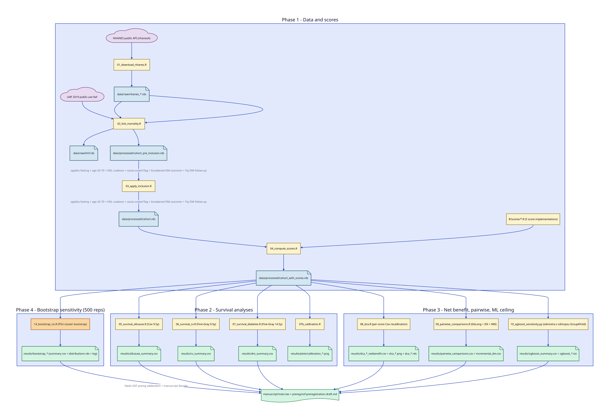
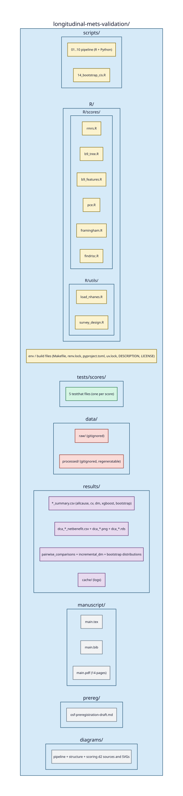

External longitudinal validation of metabolic syndrome risk scores for cardiovascular, diabetes, and all-cause mortality in the US NHANES Linked Mortality File
Pre-registered observational cohort study, NHANES 1999 to 2018 linked to the NHANES Linked Mortality File 2019 release.
Headline finding
- For cardiovascular and all-cause mortality, the clinical risk equations (Framingham 2008, PCE) clearly dominate the metabolic-syndrome-derived scores. The XGBoost ceiling on the MetS inputs alone does not close the gap.
- For diabetes-related mortality, RMRS competes head-to-head with FINDRISC on point discrimination (delta-AUC +0.011 favoring RMRS, 95% bootstrap CI -0.053 to +0.075) and gives modest incremental value when stacked on FINDRISC (IDI 0.0031, continuous NRI 0.173, both CIs exclude zero).
- The B9 decision tree is consistently outperformed by the continuous RMRS on every outcome, and the XGBoost ceiling on the same inputs exceeds both. The B9 underperformance pattern is a tree-structure problem and is not a problem of the MetS signal.
Study at a glance
Cohort. Pooled NHANES 1999 to 2018 fasting subsample, adults 40 to 79 years, with non-missing values on the five metabolic syndrome components and eligible mortality linkage. N = 17,031.
Outcomes. Cardiovascular mortality (10-year cap), all-cause mortality (10-year cap), diabetes-related mortality under a broadened definition combining underlying-cause diabetes mellitus, underlying-cause nephritis, and the LMF DIABETES contributing-cause flag (15-year cap). 806, 181, and 80 events respectively.
Scores compared. RMRS (continuous metabolic-syndrome risk score via triangular areal similarity); B9 (decision-tree formulation of the same five components); ACC/AHA Pooled Cohort Equations (primary cardiovascular baseline); Framingham 2008 (secondary cardiovascular baseline); FINDRISC (type 2 diabetes screening baseline).
Methods. Survey-weighted Fine-Gray competing-risks (cardiovascular, diabetes) and Cox proportional hazards (all-cause). Time-dependent IPCW AUC at off-cap horizons. Decision curve analysis with per-score Cox recalibration to put all five scores on a probability scale. DeLong-based delta-AUC plus 500-rep PSU-cluster bootstrap CIs. Continuous NRI and IDI. XGBoost ML ceiling with PSU x stratum grouped cross-validation.
Diagrams



scripts/, R/scores/, and R/utils/. Outputs land in results/. The OSF pre-registration draft is in prereg/ and the manuscript LaTeX source plus rendered PDF in manuscript/.Headline numbers
Time-dependent AUC at primary horizons (500-rep PSU-cluster bootstrap 95% CIs)
| Score | Outcome | Horizon | AUC (95% CI) |
|---|---|---|---|
| Framingham 2008 | All-cause | 9.5y | 0.810 (0.795, 0.825) |
| PCE | All-cause | 9.5y | 0.758 (0.736, 0.778) |
| FINDRISC | All-cause | 9.5y | 0.682 (0.659, 0.703) |
| RMRS | All-cause | 9.5y | 0.595 (0.574, 0.618) |
| B9 tree | All-cause | 9.5y | 0.525 (0.505, 0.542) |
| Framingham 2008 | Cardiovascular | 9.5y | 0.859 (0.833, 0.883) |
| PCE | Cardiovascular | 9.5y | 0.811 (0.776, 0.846) |
| RMRS | Cardiovascular | 9.5y | 0.662 (0.625, 0.692) |
| B9 tree | Cardiovascular | 9.5y | 0.565 (0.528, 0.597) |
| FINDRISC | Diabetes-related | 14.5y | 0.766 (0.715, 0.817) |
| RMRS | Diabetes-related | 14.5y | 0.747 (0.692, 0.800) |
| B9 tree | Diabetes-related | 14.5y | 0.585 (0.533, 0.633) |
Registered pairwise delta-AUC contrasts
| Contrast | Outcome (horizon) | Delta-AUC (95% CI) |
|---|---|---|
| RMRS vs FINDRISC (H3 non-inferiority) | Diabetes-related (14.5y) | +0.011 (-0.053, +0.075) |
| RMRS vs B9 | All-cause (9.5y) | +0.066 (+0.044, +0.089) |
| RMRS vs B9 | Cardiovascular (9.5y) | +0.086 (+0.044, +0.129) |
| RMRS vs B9 | Diabetes-related (14.5y) | +0.149 (+0.079, +0.215) |
| PCE vs Framingham (H2) | Cardiovascular (9.5y) | +0.009 (-0.008, +0.026) |
XGBoost ML ceiling on the metabolic syndrome inputs
| Outcome (horizon) | ML AUC | Top clinical / MetS score |
|---|---|---|
| All-cause (9.5y) | 0.813 | Framingham 0.810 (no headroom) |
| Cardiovascular (9.5y) | 0.813 | Framingham 0.859 (clinical above ML) |
| Diabetes-related (14.5y) | 0.799 | FINDRISC 0.766 (5 AUC pts of headroom) |
Code, draft, and pre-registration
- Source repository github.com/jayhemnani9910/longitudinal-mets-validation
- Manuscript PDF manuscript/main.pdf
- Pre-registration draft prereg/osf-preregistration-draft.md
- OSF registration pending submission
- Result CSVs results/ (allcause, cv, dm, pairwise, dca, xgboost, bootstrap)
- Pipeline source scripts/01 to 14
Source papers
The two metabolic syndrome risk scoring methods evaluated here come from the Shin, Oh, and Shim research line.
- Shin HJ, Oh J, Shim SS. A robust metabolic syndrome risk score using triangular areal similarity. PeerJ Computer Science, 2024. (RMRS, score B8.)
- Shin HJ, Oh J, Shim SS. Machine learning predictive model for metabolic syndrome prevention. PLoS ONE, 2023. (B9 decision tree.)
The clinical risk equation baselines come from the standard literature: Goff et al. (ACC/AHA 2014) for PCE; D'Agostino et al. (Circulation 2008) for Framingham; Lindstrom and Tuomilehto (Diabetes Care 2003) for FINDRISC.